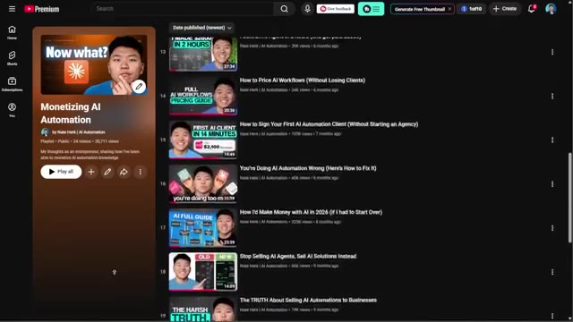
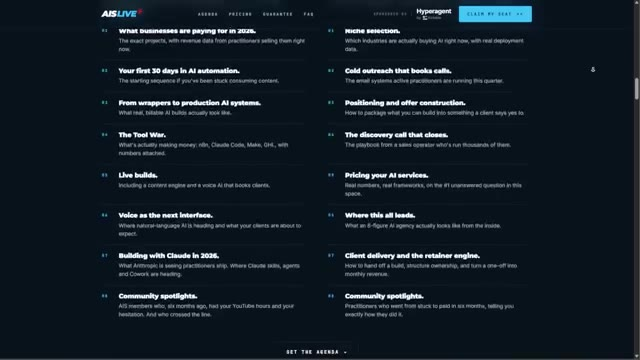

On a l'impression qu'une grande partie de ce qui fait réellement fonctionner une agence d'IA est délibérément gardée hors de YouTube. YouTube regorge d'excellents contenus pour apprendre la technique, comment décrocher des clients, mais dès que l'on commence à poser des questions comme la façon de cadrer un projet, ce qu'il faut facturer et comment le livrer concrètement sans que tout s'effondre, on a encore l'impression d'avoir ce syndrome de l'imposteur et d'être peut-être un peu confus.
Interface & Outils : Aucune interface logicielle ou technique visible.
Contenu textuel & Code : Aucun code, terminal ou diagramme affiché.
Action / Démonstration : Le présentateur s'adresse directement au public en parlant.
Maintenant, une partie de cela s'explique par le fait que c'est un peu la recette secrète, mais c'est surtout parce que tout le monde est dans une situation tellement différente au début, et ce domaine n'est pas du tout du genre "taille unique". Tout est question de répétitions et d'application des connaissances à sa propre expérience. Maintenant, j'ai publié beaucoup de contenu gratuit autour de tout ce sujet d'agence d'IA, et c'est un point de départ vraiment formidable.
Interface & Outils : Aucune interface visible.
Contenu textuel & Code : Aucun contenu technique ou graphique affiché.
Action / Démonstration : Le présentateur s'adresse directement à la caméra en parlant.
Vous pouvez aller sur ma playlist de monétisation de l'automatisation de l'IA sur YouTube. C'est entièrement gratuit. Et vous verrez que je présente de vrais agents que j'ai vendus, un vrai appel de vente, comment signer votre premier client, comment tarifer vos flux de travail, comment les livrer, et une tonne de preuves et tout un tas de choses comme ça. Donc, comme je l'ai dit, c'est un excellent point de départ. Mais là où nous voyons tous nos clients obtenir des résultats rapidement, c'est en étant dans la pièce avec les bonnes personnes, car ils sont capables d'expliquer leur situation, de poser des questions sur mesure et d'entendre différentes personnes qui ont une longueur d'avance sur eux, ou peut-être trois longueurs d'avance.
Interface & Outils : Navigateur web affichant une page de playlist YouTube.
Contenu textuel & Code : Titres de vidéos de la playlist : "How to Price AI Workflows", "How to Sign Your First AI Automation Client", "Stop Selling AI Agents, Sell AI Solutions Instead".
Action / Démonstration : Navigation et présentation visuelle de la playlist YouTube mentionnée dans l'audio.

🔍 AgrandirDonc, j'ai deux choses dont je veux vous parler aujourd'hui. L'une est un événement virtuel que nous organisons appelé AIS Live les 11 et 12 juillet. L'autre est un mastermind en personne sur l'IA au Monténégro du 29 au 31 juillet. Donc, d'abord, AIS Live. Le premier jour est le jour de construction. Il va donc y avoir des constructions en direct, les projets qui se vendent, des appels en direct avec de vrais propriétaires d'agences d'IA, en décortiquant des constructions qu'ils ont réellement déployées.
Interface & Outils : Page web du site web promotionnel de l'événement AIS Live.
Contenu textuel & Code : Texte promotionnel, dates de l'événement (Jul 11-12), format 100% Online, et bouton de réservation.
Action / Démonstration : Navigation et présentation de la page web de l'événement virtuel AIS Live.
Ensuite, le deuxième jour est consacré à l'aspect commercial des choses. Donc, la sélection de niche, la prospection, le positionnement, la définition du périmètre, la tarification, la prestation, et bien plus encore. Encore une fois, ce sont des appels en direct et j'ai rassemblé et sélectionné une tonne de vrais propriétaires d'agences d'IA. Nous avons également eu la chance d'avoir le HyperAgent d'Airtable comme sponsor principal pour cet événement. Donc, si tout ce que je viens de mentionner vous intéresse, consultez le premier lien dans la description pour découvrir AIS Live.
Interface & Outils : Navigateur web (page d'atterrissage de l'événement AIS LIVE)
Contenu textuel & Code : Texte listant les sujets de la formation : Niche selection, Cold outreach, Positioning, Pricing, Client delivery, etc.
Action / Démonstration : Présentation visuelle de l'agenda et du programme des journées de formation sur le site web.

🔍 AgrandirEt maintenant, l'événement au Monténégro. Je vais m'y rendre moi-même et j'adorerais vous y rencontrer. Nous avons fait un événement similaire en février au Cap, qui a été absolument incroyable. Des noms comme Liam Otley, Dave Ebelar, Jack Roberts, et bien, bien d'autres seront là. Nous prendrons la parole. Vous aurez l'occasion de réseauter avec eux et avec des tonnes de personnes qui font toutes sortes de choses différentes dans le domaine de l'IA. Et de plus, tous les participants seront des propriétaires d'entreprises d'IA, des aspirants entrepreneurs, des praticiens, d'autres personnes qui sont peut-être à quelques pas derrière vous ou à quelques pas devant vous, ou peut-être exactement là où vous en êtes en ce moment.
Interface & Outils : AUCUNE
Contenu textuel & Code : AUCUN
Action / Démonstration : AUCUNE
Donc, être dans la pièce avec des gens comme ça, c'est vraiment, vraiment puissant. Je sais que celui-ci a été super rapide aujourd'hui, mais si vous êtes sérieux à l'idée de construire quelque chose de réel avec l'IA cette année, les liens pour ces deux événements sont juste en bas dans la description. Allez jeter un œil. Et si c'est pour vous, je vous y verrai. Sinon, on se reverra peut-être au prochain. Merci tout le monde.
Interface & Outils : Aucune interface ou logiciel visible.
Contenu textuel & Code : Aucun code ni élément graphique affiché.
Action / Démonstration : Le présentateur s'adresse directement au public en parlant.